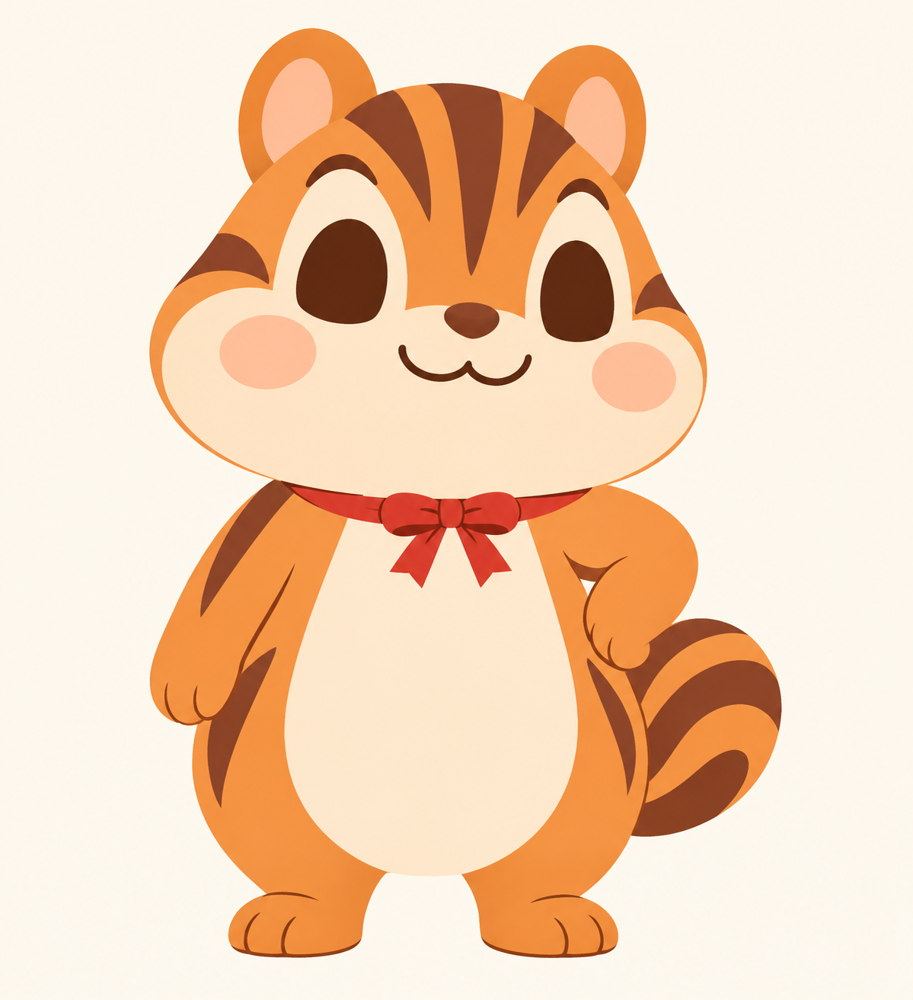

칩멍크 2D 플랫 시안
비율은 코지 3D 시안과 같고, 2D 플랫 일러스트로 그렸습니다. 입체 질감과 광택은 뺐습니다.
휴대폰으로 차트를 보는 핵심 행동. 플랫 색면과 간단한 셀 그림자.

포인트 소품은 목끈 하나. 들뜬 표정.
고르실 때 볼 점: 3D 같은 부피감 없이도 귀엽게 읽히는지, 소품 하나가 충분히 포인트가 되는지.
나머지 두 자세(맨몸, 두 손 모음)는 한도가 풀리거나 다른 생성 방법을 정한 뒤 뽑겠습니다.